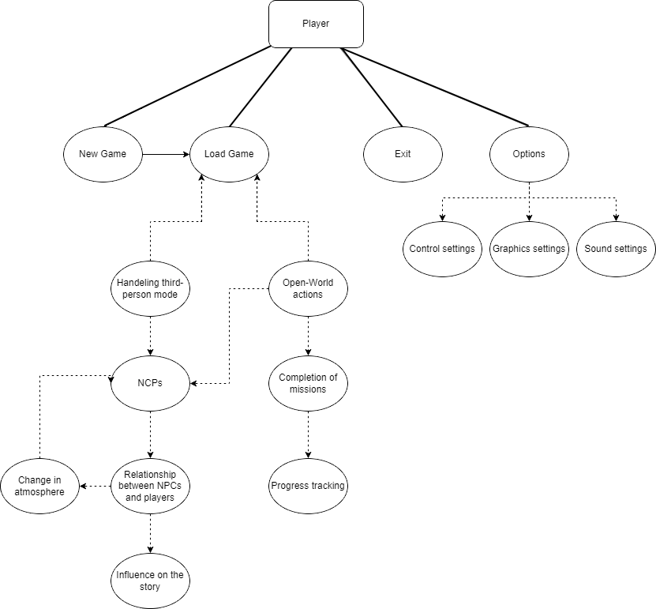

SRS dokumentum
H3 feladat
Történet
|
Dátum
|
Verzió
|
Leírás
|
Szerző
|
|
2023.11.04
|
1.0
|
Kezdeti verzió, H3 dokumentum elkészítése
|
Kelemen Beáta
|
|
2023.11.05
|
2.0
|
Másodlagos verzió, H3 dokumentum bővítése
|
Nádpataki-Sass Bálint
|
|
2023.11.06
|
3.0
|
Harmadlagos verzió, H3 dokumentum további bővítése, áttekintése
|
Buha Milán, Takács Ákos
|
Tartalomjegyzék
1.
Bevezetés
2.
Áttekintés
3.
A rendszer funkciói
3.1
Első követelmény
4.
Használhatóság
5.
Megbízhatóság
6.
Teljesítmény
7.
Támogatottság
8.
Tervezési korlátozások
9.
On-line dokumentáció és Help rendszer
10.
Felhasznált kész komponensek
11.
Interfészek
11.1. Felhasználói
interfészek
11.2. Hardware
interfészek
11.3. Software
interfészek
11.3. Kommunikációs
interfészek
12.
Alkalmazott szabványok
12.1. Kötelezően
alkalmazandó szabványok
12.2. Választás
alapján alkalmazott szabványok
13.
Mellékletek
1. Bevezetés
A megálmodott játékunk neve: The UNI Saga, ami egy MMORPG, és kalandjáték ötvözete. A játék egy kitalált univerzumban, egy kitalált országban játszódik, Triviálisztánban,
mely egy egyetemi környezetben helyezi el a játékosokat, és ahol a tudás és a bátorság a kulcs a sikerhez.
Játék célja a felfedezés, fejlődés és szociális interakciók más játékosokkal.
2. Áttekintés
A termék környezete: A játékunk Steamen és később Epic Games-re fog megjelenni a PC-re. Más eszközre nem készülünk megjelentetni. A játék egy többszemélyes, és egyszerre több szervert fogunk futtatni, különböző régiókban, legyen az Európa, Ázsia, Észak-Amerika stb.
Egy szerver 1000 embert képes befogadni, és egy játékos egyszerre egy karakterrel tud játszani. A játék elindulásakor várunk a legnagyobb játékosszámra. Ezen felül megpróbáljuk a a játékosszámunkat fenttartani, és eventeket, kiegészítőkkel próbáljuk "frissen" tartani a játékunkat. A szoftverünk végtelenségig játszható, mert különböző karakterek különböző játékstílust ígényelnek, és így akár többször is újrajátszható.
Egy karakterrel való teljes végigjátszásnak 100 órát tippelünk.
Funkciók: A játék több mint 100 órányi tartalommal rendelkezik, de a karakterek fejlődése alapján a játékidő tetszőlegesen hosszabbítható. A játékosok szabadon mozoghatnak a világban, de közben küldetéseket is teljesíteniük kell az egyetemet körülvevő sötét erdő mélyebb részei feloldásához. A többjátékos mód lehetővé teszi a játékosok számára, hogy közösen vigyék végig a játékot és küzdjenek az ellenségek ellen.
A szoftver bármely korosztály számára ajánlott és elérhető. Többnyire magánszemélyek körében lehet számítani az alkalmazás elterjedésére. Valószínűleg a legfőbb célközönség a fiatal felnőttek korosztálya, egyetemisták, azonban az is elképzelhető, hogy már végzett hallgatók, oktatók is fognak vele játszani. Bárki jól érezheti magát a játék közben, szolgálhat unalom elűzésre, kihívások iránti vágy csökkentésére, szórakozásra.
Korlátozások:
A játék időbeli korlátozásai: A játékban eltöltött idő nem korlátozott, így a játékosok bármennyi időt tölthetnek el benne anélkül, hogy bármilyen limitációval találkoznának.
Életkori korlátozások: A játék tartalma nem tartalmaz semmilyen olyan elemet, ami korhatár-besorolást igényelne, így minden korosztály számára hozzáférhető.
Grafikai beállítások: A játékosok képesek lesznek módosítani a grafikai beállításokat, hogy az alacsonyabb teljesítményű gépeken is élvezhető legyen a játék. Ezen felül a játékot úgy optimalizáltuk, hogy az 64-bitet támogató operációs rendszereken fusson a legoptimálisabban.
Jogi korlátozások: A játék használatához elengedhetetlen az Adatvédelmi és Általános Szerződési Feltételek(ÁSZF) és a végfelhasználói licencszerződés elfogadása.
Feltételezések: A felhasználó rendelkezik internetkapcsolattal az online funkciók működéséhez, tisztában van az operációs rendszere kezelésével. Egy időben csak egy felhasználó használja a terméket.
Függőségek: A felhasználó rendelkezik egy Directx 12-t és Vulkan-t támogató videokártyával. A VC Runtimes 2020 elérhető a szoftver megfelelő működéséhez. Amennyiben nincs elég hely a teljes adatbázis számára, lehetséges az osztott adatbázis alkalmazása.
3. A
rendszer funkciói
A The UNI Saga alkalmazás során a felhasználó által használt funkciók közé tartozik az új játék kezdése,
illetve a már mentett játék elindítása, folytatása.
A játékban nincs felső korlátja a szinteknek.
Azonban ahogy fejlődünk, a következő szint eléréséhez egyre több tapasztalati pontot kell gyűjtenünk.
A tapasztalati pontokat a fő- és mellékküldetések teljesítésével, valamint az ellenségek legyőzésével szerezhetjük meg.
Fontos megjegyezni, hogy a szintünk alatti ellenfelek kevesebb tapasztalati pontot adnak, tehát a fejlődésért meg kell dolgozni!
A szoftver egységei:
Menü: Egy egyszerű menü rendszert képzelünk el, ahol a játékos kiválaszthatja a karakterét, eszerint a kart, mellyel szeretne játszani.
Itt tudja elindítani az új vagy a meglévő, már mentett játékot is.
Beállításokat elérheti, ahol tudja szabályozni a hangerőt, felbontást, felhasználói adatokat, és sok mást.
Nem utolsó sorban itt tudja megállítani, folytatni, kilépni a játékból.
Karakterek: Az egyetemi élet középpontjában a hallgatók állnak és a sötét mágia által torzított szörnyekkel, illetve gonosz törvényen kívüli mágusokkal mérkőznek meg.
Minden oktató és tanár különféle kihívásokkal és feladatokkal várja a diákokat. Ezeket a karakter objektumokat nem a felhasználó kezeli.
Az NPC-k viselkedését a játékos és az ő döntései, eredményei befolyásolják.
Bizonyos NPC-kel lehet harcolni, szembe szállni.
Offline egyjátékos módok:
Use Case diagram: az alapvető felépítésről

Szereplők közül itt még csak a ’Játékos’ szerepel, és a rendszer válaszaihoz más emberi beavatkozás nem csatlakoztatható.
Új játék kezdése: Ezt a funkciót alkalmazva a felhasználó saját mentési slot-ot kiválasztva, a szoftver kezdeti állapotából indulhat.
Játék betöltése: Akár új, akár elmentett állapotot betöltve elindul a szoftver főbb része, mely egy RPG esetén két nagyobb csoportú kezelőfelület adott kritériumoknak megfelelően váltogatja egymást.
Nyílt világi cselekvés: RPG játékok esetén itt a játékos szabad döntéseket hoz, és próbálja a szoftver által kiadott küldetéseket teljesíteni, annak érdekében, hogy elérje a történet végét. Azonban a szoftvernek nincs beleszólása a felhasználó választásain, így mindenki a saját döntése alapján növelheti a progressziót.
Küldetések teljesítése: Amint egy adott küldetés minden egyes pontját teljesítette a játékos, egy megadott számú tapasztali ponttal, és/vagy megadott felszereléssel adományozza meg a rendszer.
Előrehaladás nyomonkövetése: A szoftverben lehetséges lesz a jelenlegi, vagy a már teljesített küldetések nyomon követésére. Ezt a szoftver is kezeli és esetleges magasabb szintű küldetéseket folyamatosan oldja fel.
NPC-k: A világ tele lesz nem játszható karakterekkel, akik küldetéseket adnak a "kalandornak", vagy bizonyos terület történetet mesélik el. Minden nagyváros rendelkezni fog eladókkal is.
Játékos és NPC-k közötti viszony: A Játékos mindegy egyes NPC-vel beszélni tud majd, valakimelyik több, mások kevesebb dialógus opcióval fognak rendelkezni. Egyesekkel sorosabb kapcsoaltot is lehet ápolni, és segítségedre lehetnek a harcokban.
Nyílt-világ atmoszféra változása: Változó időjárás lesz a játékunkban. Ezen kívűl minden terület különböző atmoszférával és időjárással fog rendelkezni.
Történet befolyása: Az UNI Saga rendelkezni fog egy főtörténeti szállal, de ez csak a vázat fogja adni a játéknak, és rengeteg mellékküldetéssel és egyéb szórakoztató minigame-mel lesz tele.
Beállítások: Paraméterek testreszabhatósága, karakterek alakítása, felhasznói élmények csoportosítása. Grafika, Audio, Irányítás.
Kilépés: A szoftver legális bezárását ez a funkció biztosítja.
Több játékos mód:
Use Case diagram: az alapvető felépítésről a többjátékos módhoz

Leírás: A ’Játékos’ szereplők mellett itt bekerülnek második szereplők is a ’Játékos’ néven, mely nagy vonalakban ugyanazokat a szerepeket tölti be, mint a ’Játékos’.
- Centrális adatbázis: Többjátékos játékok esetében a centrális adatbázisok fontos szerepet játszhatnak a játékosok és a játékelemek közötti információ tárolásában és kezelésében. Ezek az adatbázisok lehetnek online szerverek, amelyek a játékosok közötti kommunikációt és a játékállapotok tárolását kezelik. Az ilyen adatbázisoknak számos fontos szerepük van a többjátékos játékokban
- Játék elhagyás: A játékosoknak mindig legyen lehetőségük azonnal kilépni a játékból, ha úgy döntenek. Ezt általában egy "Kilépés" vagy "Menü" gomb segítségével érhetik el. Egyes játékmódokban bevezetjük a bírságrendszert azok számára, akik túlzottan gyakran hagyják el a játékot. A bírságok lehetnek időszakos kizárások, pontvesztések vagy más büntetések.
- Kihívás kiválasztása: A játékosok sok különböző küldetés közül tudnak választani. A küldetés nehezsége az ajánlott szintből fog adódni.
- Játék kezdete: A főmenűben lévő START gomb megnyomásával lehetőség van kiválasztani a karaktered és belépni az UNI Saga világába.
- Pálya betöltése: A pálya betöltése során a játékmenet szünetelhet rövid ideig, amíg a szükséges erőforrásokat és adatokat beolvassa és előkészíti a következő pálya megjelenítéséhez. Ez alatt betöltőképernyőt fog mutatni a szoftver amíg dolgozik.
- Tereptárgyak, checkpontok betöltése: Ahogyan a pályabetöltési folyamat részeként, először az összes szükséges tereptárgyat és checkpoint-ot be kell olvasni a játékba. Ezek tartalmazhatnak 3D modelleket, textúrákat, animációkat, hangokat és egyéb adatokat.
4.
Használhatóság
Betanulási idő:
A játék elsajátítása egyszerű, nem vesz igénybe sok időt. A fejlesztés során törekedtünk arra, hogy bármilyen felhasználó számára könnyen kezelhető legyen, annak is, aki még nem találkozott ilyen típusú játékkal. Bármilyen platformon, legyen az PC vagy konzolos. A játék kezdete előtt a felhasználó eldöntheti, hogy szeretné-e kipróbálni a tutorialt, ahol megismerheti a játékot és már tapasztalattal kezdi meg a játékot. A kezelőfelület is megkönnyíti a játékosok helyzetét, letisztult, egyszerű, jól érthető. Illetve további súgó funkció is van, amely magyarázatot ad az esetleges kérdésekre, az irányításról, billentyűzet funkciókról és egyéb játék elemekről. Tehát ez az egész betanulási folyamat körülbelül fél órát vesz igénybe.
Időigény:
Az elsajátítás időtartalma, nyilván függ a játékosok, felhasználók képességeitől, ismereteitől, az abba fektetett időtől, és a hajlandóságtól. Ahogy a betanulási időnél is említettük ettől függetlenül, a játék mielőbbi elsajátításához minden adott, kezdő- és gyakorló-, expert felhasználók is hamar el tudják sajátítani a tudást. A tanuló móddal, a súgó funkcióval. A teljes történet idő 100 óra azonban ezt a különböző karakterekkel, különböző játékstílusával megtudja növelni és végtelenségig tudja játszani. Pályánként, küldetésenként, szintenként adódik össze ez az időtartam. Egy pálya átlagosan 1 órát vesz igénybe, de itt is függ a felhasználó ismereteitől, ezt figyelembe változhat mindkét irányban ennek az ideje.
Segítség a rendszertől:
Elsősorban a platform specifikus tutorial, azaz tanuló mód jelenti, melyet az első találkozáskor megismerhet a felhasználó, itt az alapvető funkciókat, irányításokat ismerheti meg a felhasználó, azonban ezt csak minden játék elején tudja elindítani. Azonban a legnagyobb segítség a beépített súgó rendszer lesz, mivel ezt bármikor a későbbiek során előtudja hívni a játékos. Ha elakad a játék közben az adott pályához specifikus tippeket kaphat, de az irányítás gombjait és egyéb funkciókat is megtalál.
Egyéb lehetőségek a betanuláshoz:
A szoftverről írt dokumentációk elérhetőek online, vagy a README dokumentumban a telepítés után, azonban ha fizikai formában szeretnénk hozzájutni, akkor papír alapon is hozzájuthatunk a legfontosabb dokumentumokhoz. A felhasználók ezeknek az ismeretében, minden segítséget megkapnak.
Felhasználói felület:
A játék készítésekor, fejlesztésekor törekedtünk arra, hogy minél egyszerűbb legyen a kezelése. A menü esetében nem alkalmaztunk félre érthető, bonyolult menüpontokat, túlzott díszítéseket. Olyan kezelőfelületre törekedtünk, amit már a felhasználók láthattak korábban, ismerhetnek más játékokból, nem utolsó sorban egyszerű és átlátható felületet szerettünk volna kialakítani számukra.
Futtatás:
Természetesen függ a rendszer erőforrásaitól, hogy a felhasználó milyen eszközzel rendelkezik, s annak milyenek a kapacitásai. A játékon belüli beállításoktól függ az általa igénybe vett erőforrások mérete is. Egyértelműen befolyásolhatja az egyidejűleg futó programokat, gyengébb rendszereken a játék. Erősebb gépeken, eszközökön nem akadályozza a játék, hogy mellette internetezzünk, vagy más programokat futtassunk a bezárása nélkül. Összességében a játék felhasználói élménye minden eszközön garantált, de figyelembe kell venni a fent írt erőforrások függvényét.
5.
Megbízhatóság
-
A szoftver 99 %-ban(az esetlegesen felmerülő problémák miatt) rendelkezésre áll egyjátékos módban, többjátékos módban havi egy karbantartást tervezünk, melynek ideje körülbelül 5 órát vesz igénybe. Ez idő alatt a használhatóság korlátozott lehet.
-
MTBF: (Mean Time Between Failures): hibák között eltelt átlagos idő kb. 3000 óra
-
MTTR: (Man Time To Repair): egy hiba utáni javítás átlagos ideje 5 óra, függ a hiba mértékétől
-
A hibák kezelése: a súlyosság mértékétől függően kezelés vagy a program terminálása
A hibák javítását továbbra is mi, a Let Us Cook! csapat végzi.
6.
Teljesítmény
Az elvárt teljesítmény mutatók:
- Válaszidők: Egyjátékos mód esetén..
Online mód esetén Európán belül kb. 10 másodperc, 300 másodperc után, tehát 5 perc elteltével vagy a fölött a kapcsolat megszakad
Áteresztő képesség összesen 50.000 TPS
Users(Threads) esetén 10.000
End to End Response Time: 2 másodperc
Pacing: 0 másodperc
Total Think Time: 0 másodperc
Kapacitás: a játék indulásánál, egyjátékos módban, az egyidejűleg kiszolgálandó felhasználók száma 10.000
Szerver:
CPU: AMD Ryzen7 7840HS
RAM: 32GB
Videókártya:NVIDIA GEForce RTX4060
Tárhely: 1TB Samsung 980 Pro SSD
OS: Windows
Erőforrás igények:
CPU: Intel Core I5, AMD Radeon RX
RAM: 8GB
Videókártya: Nvidia Geforce GTX, AMD Radeon RX
Tárhely: 80 GB(SSD)
7.
Támogatottság
- A játék fejlesztése során, a használandó kódolási szabványok figyelembe vételével igyekeztünk betartania C++ szabályainak betartására, a későbbiek miatt, hogy könnyebb és átláthatóbb legyen a játék bővítése vagy a hibák javítása esetén. Illetve, hogy minél látványosabb és fejlettebb grafikát kínáljunk.
- Nem igényel karbantartást az egyjátékos üzemmód, a többjátékos módot pedig havonta szeretnénk karbantartani, szükség esetén nagyobb rendszerességgel fogjuk megtenni.
- Az esetlegesen felmerülő hibákra, a játékosok , a játék hivatalos oldalán tudják felhívni a figyelmünket, illetve egy erre fenntartott email címen keresztül is tudják jelenti őket, amiket igyekszünk minél hamarabb orvosolni.
- A játék az esetleges hibákról, az online bejelentkezett felhasználókról naplófájlokat készít, dokumentálja ezeket. Ezeket segédalkalmazásokkal kiértékeljük.
8.
Tervezési korlátozások
- C++ programozási nyelvben fogjuk fejleszteni, a látványos és fejlett grafika érdekében. Unreal Engine 5 motorját is használjuk, a fények és árnyékok realisztikus kezelésére, ami segít élethűvé tenni az épületeket és a tájakat. Emellett MySQL-re lesz szükség az adatbázisrendszerekhez, melynél törekszünk mindig a legfrissebb, legbiztosabbnak talált verziót használni. Fontos számunkra, hogy minél több felhasználóhoz el tudjuk juttatni a szoftvert, emiatt platformfüggetlen legyen. Illetve az objektum orientált programozást szem előtt tartva a nyelv kiválasztásakor.
- Fejlesztőeszköznek a Visual Studio Code-ot választottuk, ebben fog történni a fejlesztés.
- Célunk, hogy minél alacsonyabb rendszerkövetelményt igényeljen a játék konzolon és PC-n is. Ezáltal tudjuk biztosítani, hogy minél több hardveren tudjon futni. Nem utolsó sorban így több felhasználót el tudunk érni, mert az is hozzá tud férni, aki kisebb teljesítményű géppel, eszközzel rendelkezik.
- Milyen újra felhasználható elemek építhetők be az alkalmazásba (komponens- és/vagy osztálykönyvtárak, kész kódok stb.).
- Milyen fejlesztési módszertant, hogyan kell használni.
- A játék fejlesztési módszere a Scrum. A Scrum egy könnyen érthető és alkalmazható módszer, amely lehetővé teszi a folyamatos visszajelzést és a hatékony fejlesztést.
A Scrum projektet kis időablakokra osztja, amelyeket "sprinteknek" neveznek, általában 2-4 hét hosszúságúak. Minden sprint kezdetén a fejlesztőcsapat kiválasztja a sprint deliverables-t, amit a sprint végéig elkészítenek. A terméktulajdonos összeállítja a termék backlog-ot, amely tartalmazza a jövőbeni fejlesztésre tervezett funkciókat és javításokat. A backlog elemeket prioritással rendelkező listaként kezelik. Minden sprint kezdetén a fejlesztőcsapat kiválasztja a sprint backlog elemeket a termék backlog-ból, és meghatározza, hogy mely feladatokat hajtják végre a sprint során. A sprint végén tartott meeting, ahol a fejlesztőcsapat bemutatja a sprint deliverables-t a terméktulajdonosnak és más érdekelteknek. A visszajelzések és az elfogadás itt történik.
9. On-line dokumentáció és Help rendszer
A játékról való információk a weboldalon található dokumentációkban lesz elérhető.
Ezeket a játékon belül, a menü pontból is eltudjuk érni, mivel átirányít minket a játék weboldalára.
A játék telepítése után a felhasználó számára elérhetővé válik a súgó, melyhez offline is hozzá tud férni a játékos. Itt továbbra is olvashat a kezdeti lépésekről, a játék menetéhez szükséges fontos információkról. Amennyiben fizikailag vásárolja meg a felhasználó, a csomagban található lesz a játék dokumentációja, illetve ez tartalmazni fog egy QR kódot is, illetve egy URL-t, melyeket beolvasva/beírva továbbítja a játékost a weboldalra, online fórumra, ahol megtalálja ezeket az információkat, dokumentumokat, kérdéseire a választ.
Illetve itt tudják még megosztani egymással a tapasztalataikat, esetleges kérdéseiket megvitatni.
10. Felhasznált kész komponensek
Steam API/SDK:
A játék kommunikációját segíti a Steam szervereivel, lekérdezheti a steam interface parancsait, adatokat küldhet a játékos által elért teljesítményekről, amelyeket a steam profilban átállíthat elért állapotúra.
Unreal Engine: Az általunk használt grafikai motor, amit a játék fejlesztéséhez használunk. 654571Ft fő/év
Visual Studio 2022:Szintén a fejlesztéshez használt licence, scriptek írásához használjuk. $1000 / fő
Szerver gép bérlés: Ennek az összege változható lehet, a játékosszámot tekintve lehet 1500$/hónap.
11.
Interfészek
11.1. Felhasználói interfészek
- használandó szabvány vagy kvázi-szabvány, stílus,
- a különböző felhasználói csoportok (munkakör, gyakorlottság stb. szerint) elvárásai,
- a leglényegesebb user interface elemek tervei.
A szoftver grafikus felülettel rendelkezik, amelyen keresztül a játékosok kommunikálnak a játékkal. A grafikus elemek segítségével könnyen navigálhatnak és folyamatosan tájékozódhatnak a játék világában. Az alábbiakban néhány példa található ezekre a grafikus elemekre:
- Üzenetablakok: Ezek az ablakok jelenhetnek meg, hogy tippeket adjanak a játékosoknak vagy tájékoztatást nyújtsanak a játékbeli eseményekről, például karakterek interakcióiról.
- Szövegdobozok: Ezek a dobozok lehetővé teszik a játékosok számára a szöveg bevitele és megjelenítése, például chat ablakok vagy felhasználónevek beírásához.
- Kiválasztó listák: Alkalmanként a játék lehetőséget kínál a játékosoknak arra, hogy válasszanak különböző lehetőségek közül, amelyek befolyásolhatják a játék folyamatát. Ezeket a választási lehetőségeket kiválasztó listák segítségével lehet kezelni.
Az ilyen grafikus elemek, például felugró üzenetek vagy szövegdobozok, segítik a játékmenetet és könnyen kezelhetővé teszik a játékot. A felhasználók könnyen értelmezhetik ezeket az elemeket, és segítik a játékosokat az információk megértésében és a játékbeli döntések meghozatalában.
A főmenü designja:

11.2. Hardware interfészek
A játékot hagyományosan számítógépen az egér és a billentyűzet segítségével irányítják, de lehetőség van kontrollerek használatára is. Konzolok esetében a konkrét konzolhoz tartozó kontrollerrel történik az irányítás. Célunk, hogy mindkét típusú hardverrel tökéletesen lehessen játszani.
11.3. Software interfészek
Ha a rendszernek más rendszerekkel az üzembe helyezés után, vagy belátható időn belül majd a kapcsolatot kell tartania más rendszerekkel, itt kell megadni a kapcsolat kiépítéséhez szükséges részletességű információkat.
Számítógépeken a program futásához egy 64 bites operációs rendszerre van szükség (Windows, Linux), illetve a legfrissebb .NET-et támogató runtime szoftverekre.
11.3. Kommunikációs interfészek
Ha a rendszernek valamilyen kommunikációs csatorna vagy csatornák segítségével kell kapcsolatot tartania a felhasználókkal vagy más rendszerekkel. (Például internetes, mobiltelefonos kliens stb.)
A játék online tartalmakat is kínál, amelyekhez aktív kommunikációs csatornára van szükség a játékosok és a szerver közötti kommunikációhoz. Ennek érdekében az internetkapcsolat elengedhetetlen. A játékosok azonosítását különböző módokon végezhetik:
Számítógépek esetében a játékosokat például SteamID használatával lehet azonosítani.
Konzolok esetében a játékosok az adott konzolhoz tartozó felületen történő regisztrációval kaphatnak UserID-t az azonosításhoz.
Fontos megjegyezni, hogy a játékhoz nincs külön indítóalkalmazás (launcher), így külön regisztrációra nincs szükség. A játékhoz való szerverkapcsolat TCP/IP protokollon keresztül történik.
12.
Alkalmazott szabványok